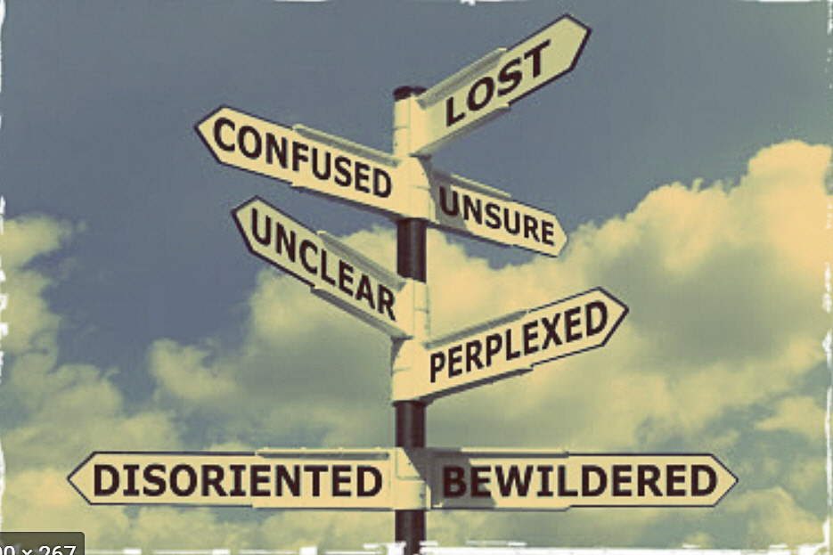

Make contact
Need directions?
We'd love to hear from you. Send a note, share your best getting-lost story, or simply confirm that you're also not sure where you parked.
This is a static website, so the form below opens your email app rather than sending information to a server.
